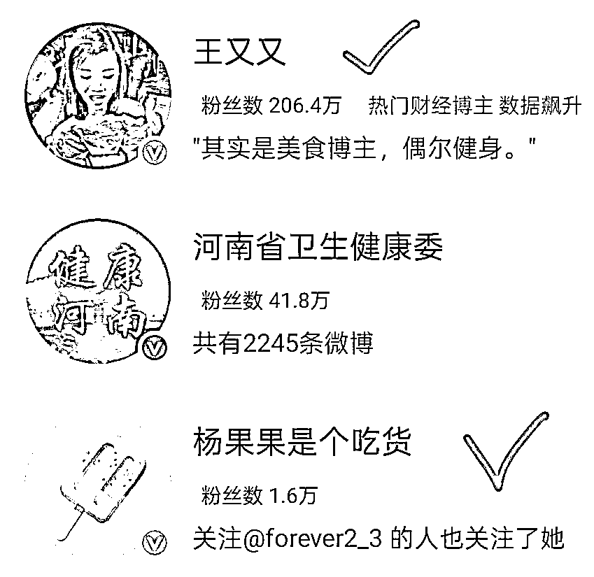
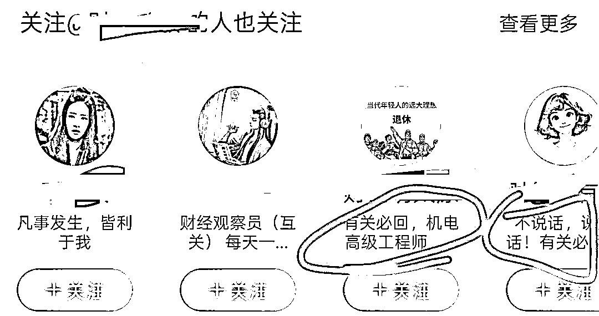
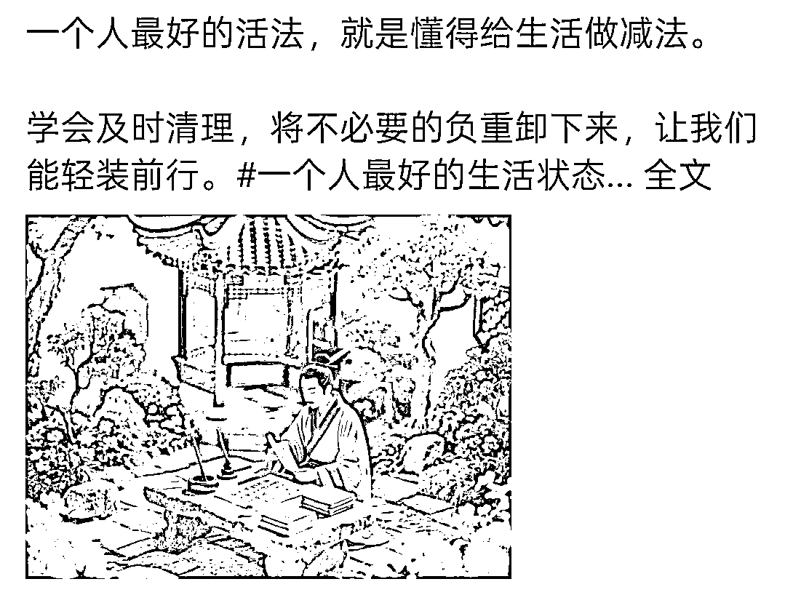

来源：https://r0dxs1nca4.feishu.cn/docx/HjT9dWWrKoiPgGxu8VOcc2BmnAg
大家好，我是生财有术五年圈友陶美丽，我一直积极参与风向标投稿，每天都会看风向标有没有更新，看的多了，我就在想，很多平台都有风向标，好像缺少新浪微博相关的风向标，我就抱着试试看的心态，在微博里带着目的，反复寻找官方通知账号，关注了微博小秘书、粉丝服务账号、微博热点、微博热搜、微博创作者中心这些账号。
4月28日，我刷到微博创作者中心发的一条微博热点激励消息，我赶紧发了一条风向标。
风向标在生财圈友里激起一点点涟漪，我想着有人点赞我就再多找找，说不定能帮到有需要的圈友。我顺藤摸瓜，在活动介绍里找到了优秀大V，然后关注，去大V评论区找线索。
我在评论区找到同频的博主，一比一模仿他们，开始完全摸不着头脑，他们写什么话题我跟着写什么话题，写了两天，我看到跟着写话题和自己随意写的阅读量完全不同！跟着写十几个字都有几万阅读量，看到异常值我就开始对比热搜排行榜，还真得被我发现一点门道儿，本文第三条给大家仔细讲一下。
先说下我做的收益情况，我是全职带娃的宝妈，用零散的时间做这个项目，大概40多天，老号从31个粉丝到6200多个粉丝，187个铁粉，认证了账号，广告共享收益有1500元。
这个微博热搜项目玩法比较简单，简单概括一下就是：你先准备一个微博账号，到微博热搜里，寻找我们自己擅长的话题，写一条微博（像小学生命题作文一样），在更新微博的同时，我们也要积极寻找同频博主互关，粉丝1000以后，认证创作者，相当于我们创建了一个收稿费的账号，有了认证账号以后发微博帖子，根据你的阅读量获得对应的创作激励金。
下面是微博热搜图，就是从这个里面找热点去写，爆的概率才更高。
关于收益，有大V透露现在参与创作计划的80%是100-200元/月。20%的大概是500-5000/月。有网感强的博主收入比较高，每天2000—3000元。
这篇0基础保姆级教程，适合零基础的圈友，可以做这个上手赚第一块钱，我替大家测试过了，下班做可以加鸡腿🍗，认真做可以成为副业的起跑线，微博彩头不是最多的，他胜在结算快，稿费隔天结算。下面我就具体来介绍一下这个项目怎么去做。
在微博里猜热点，就是带#的那种。一个热点，一般是20-90元。转发一下加30字左右的评论。转发后有流量可以赚稿费，目前一天可以转发50条。
首先准备好：头像、昵称、简介三件套

头像要有辨识度，最好模仿一页中最抢眼的那一张图片，清晰&颜色鲜明更抢眼

昵称要尽量看起来是一个真实的人（真实人设感觉更有温度，粉丝看了会有关注的念头）


简介内容会在推荐页出现，推荐修改为互关互助相关的词语，方便同频的朋友识别
新账号养号注册后3天内避免频繁修改头像、昵称或大量关注/取关。初期以原创内容为主，每日多发几条，减少转发比例（控制在10%以下）。
推荐添加图片或者表情符号、分段排版提升可读性，避免纯文字刷屏。
新注册的微博账号，系统会推荐30—50个博主，我们根据提示先关注，然后点击关注列表，查看一下推荐页简介里，有没有标记互关字样的博主，找到有互关需求的博主，进入他的主页。
点击右下角“相关推荐”

重复这个步骤
这个有限制，我现在一次关注29个，第30个会限制。（可以利用这中间几分钟去和粉丝点赞评论，增加活跃度）
限制时间很短，过几分钟又可以重复！
实打实的靠内容涨粉太慢了，微博发钱也可能是阶段性的。大家尽可能以百米赛跑的速度，冲上去薅一把。抱团取暖，以互关为抓手，迅速攒够一千个粉丝。（非微博会员微博关注的上限是5000个左右）
我们要选择粉丝在300—800之间&近期有动态的博主，关注10-15个停10分钟继续关注！用这个方法可以避开系统限制！
还有一种方式是：
4 月份有一个百万财经大 V 财宝宝，在微博里，推荐粉丝发微博赚稿费！
经过几个月的磨合，慢慢的粉丝之间达成了一种共识，把名字修改成财开头的，或者在简介里面写互关互助字样，方便同频识别，互粉互相托举…
操作步骤如下：
把名字修改成财XX，在简介里面写诚信互关…
然后找到认证标识的头像，点进主页动态栏，看看他之前关注的博主有哪些，一键关注！
亲测新号用这个办法，一天可以涨粉 500 多个，这个办法可能是微博的漏洞，使用多了效果可能没那么好（账号安全方面）需自行判断使用哈。
先来介绍一下微博的会员等级和认证机制
普通身份→黄V：粉丝≥1000+铁粉≥10+阅读量≥10万
黄V→橙V：粉丝≥1000 + 铁粉≥100 + 月阅读≥30万
橙V→金V：粉丝≥1万 + 铁粉≥1000 + 月阅读≥1000万
视频博主认证（最快3天通过）
原创视频：30天内发布≥4条原创视频（时长≥15秒，需添加转场/特效/BGM）
播放量：近30天总播放量≥1万（可自然积累或购买补足）
操作路径：微博APP → 我的 → 创作者中心 → 视频认证
超话社区认证
超话粉丝大咖：特定超话等级≥12级 + 绑定手机
超话创作官：超话等级≥10级 + 近30天发布≥1条互动≥50的帖子
超话主持人：通过超话主持人考核
兴趣博主认证（需领域垂直）
领域示例：娱乐/美妆/情感/游戏博主等
数据要求：
铁粉数 ≥ 10（连续互动3天可成铁粉）
近30天阅读量 ≥ 10万
内容要求：持续发布同一领域内容≥1个月
个人身份认证
资质证明：职业证书（如注册会计师）、学历证明、专业资格证书等
特殊类型：颜值博主需平台审核（非公开申请渠道）
文章/问答认证
成为头条文章作者或问答博主（较少用户选择）
我们攒够1000粉丝以后，认证黄V这个环节，新手我更推荐个人认证，个人认证门槛低，反馈快。等我们跑通流程，确定赛道以后，我们还有机会可以重新认证兴趣博主或者视频博主。
连续3天完成至少1次互动（如每日点赞评论)，避免断签。加入博主粉丝群每日发言，或参与超话活动。
私信互动连续三天互动，可以成铁粉（容易掉铁粉，需要及时维护）
关注博主后需保持互动，仅关注不活跃可能导致标识不显示。
铁粉数前台显示10个，系统会进行判定，判定后一般只有7、8个，需要我们多互动几个铁粉。
涨粉到1000，做好创作者认证，找到有潜力的热搜，编辑微博发布。

搜索热度+讨论热度+传播热度）×互动率（热搜实时数据每分钟更新一次。）
答：挑有潜力的新热搜。
1.热搜后带“新”字的。
挑选一条“新”点进去
看阅读量、讨论量、还有话题发布的时间
阅读量越大+ 讨论量越少 = 越好
最重要是不断刷新这个界面，观察阅读量和讨论量的变化速度，再做决定（热搜每分钟更新一次）


2.热搜在上升期的。
(1)这个热搜的排名在不断上升
(2)这个热搜的阅读数据在不断攀升
(3)这个热搜在榜时长短一点的
(4)明星、广告类的热搜一般更有潜力，猜测这类可能在平台做了投放
(点进热搜，这些数据和趋势都能看到)


3.参与热搜尽量带关键字
如 ： “ 理理是猪 ”这个热搜，至少你写的内容里有“理理”和 “猪” 这几个字眼会更容易得到流量
如：“王楚钦半决赛训练热身”，把这个关键词揉进你的犀利点评里，加上这几个字，阅读量就会高。简单重复，阅读量几万很轻松
简单重复的写出热搜词条中的关键字，再加上自己的视角，分分钟写出爆款吃瓜文案！
4.在这条热搜里找到点赞最多的微博，看文里的关键词和大致意思，创新或复制里面的金句，最后写到自己的博文里。
5.如果文笔不好，还可以选择话题里的AI智搜，帮助理解和总结主题。
6.提前预判，热点从下往上蹭（从实时上升热点往上蹭）。在热点还没成为热点时候就蹭，提前下手蹭。留言要短小精悍。找新话题，找评论少互动少，评论只有几百，阅读量几百万的新话题蹭。
7.大力出奇迹。时间充足蹭个50条总能有几条有10万+阅读量。根据过往经验摸索出早上6点到8点，写热点时间段最佳。
挑一条在上升期、最具潜力的新热搜，写它！
一条热点微博就编辑成功了！
微博发布成功后，我们可以简单做一下数据监测：
发布30分钟，如果阅读量过万，恭喜你，蹭到热搜了！
如果一小时左右阅读量还是几十或者几百，就代表没猜对热搜。没蹭到热点的博文可以删除。蹭到热搜的热点过去后，可以把热点设置成自己可见，不影响账号阅读数据。
这张收益图仅供参考，可以大致了解一个范围，平台发稿费的纬度有很多，目前还没找到具体的阅读量和金额的比例关系，感兴趣的圈友可以探索一下。
发出去有激励以后，就是收益提现了，提现步骤主要是：
微博APP → 我 → 创作中心 → 收益中心 → 广告共享计划 → 去提现。
1. 最低提现金额100元起提，如果累计收益低于100元，则无法进行提现操作。
• 若用户申请退出广告共享计划，未提现的收益将自动失效，即便这些收益已经达到了100元的提现门槛，退出计划前记得先提现。
2. 用户每7天只能提现一次，两次提现之间必须间隔至少7日。
3. 到账时效：从申请提现之日起，大约需要12个工作日才能到账到用户的银行卡中。收益中大概会扣除10%的个人所得税（提现100元，银行卡会收到90元左右）建议查看最近一周的银行流水记录来确认稿费。
•（如果在提现过程中遇到其他问题，可以私信官方账号@微博创作者广告共享计划或者联系@微博客服寻求帮助。）
有1000个粉丝之后，可以做黄V认证，为橙V加身做准备！
认证黄V后，领域垂直度高，流量会有倾斜，这时候需要我们静下心来思考，自己最擅长哪个领域的写作。如果不确定适合什么赛道，就先把基础打好，特指粉丝量和铁粉量。然后把微博当成朋友圈来用，想发就发，随意的发。平台的大数据比我们自己还了解自己，最后会给我们推荐一个垂直领域。
在追热点的同时，不要忘记维护铁粉和阅读量
1.铁粉100个，每天点开我的铁粉，拉到最下边，跟铁粉值为0的粉丝互动，增加互动率。
2.阅读量30万，如果时间允许，大力出奇迹，早上6点到8点从下往上，追热搜全部追一遍，就转评最热门顶部的文章，肯定有一篇30万。这个比较简单，不用在这上面花太多时间，掌握方法就行。
3.橙V（第一：门槛要求：1000粉， 第二：100铁粉 第三：30万阅读量）
注:橙V15天后微博会免费送VVIP会员。
4.橙v之后，我们就算中V了。长期持续输出符合平台要求的内容，平台很愿意给流量的。有橙V，有领域V指数，有热门，有50以上的转评赞，有极好的阳光信用度，稿费就基本稳定进账啦。
橙v之后加入广告共享计划，跟着同领域大V前辈依葫芦画瓢，模仿，学写作，赚稿费，追热门，加词条，借助AI，写原创文章。都可以获得收益，有收入增加生活的底气💪
要保持微博橙V认证，需持续满足三个核心指标：粉丝数≥1000、铁粉数≥100、近30天阅读量≥30万。
1.维护铁粉
每日互动：通过评论（5字以上）、点赞、转发等方式与粉丝互动，连续3天互动即可建立铁粉关系。可主动发起话题互动或建立铁粉群集中维护。
双向维护：定期回访铁粉主页互动，优先与活跃度高（如橙V/红V用户）或带有实名认证标识的账号互动，提升权重。
2.阅读量维持
蹭热搜策略：选择上升期或中低位热搜（讨论量1万左右），带话题发布15字以上原创内容，搭配图片或视频更易触发推荐。注意单日蹭热搜不超过3条避免被限流。
内容垂直化：专注特定领域（如财经、娱乐）持续输出，通过兴趣认证或专业认证提升内容推荐权重。结合热点创作“信息增量”内容，避免同质化。
高频次发布：每日至少发布5条内容，结合早中晚用户活跃时段（如10点、12点、18点、21点）定时发送。使用微博数据助手分析用户活跃周期优化发布时间。
3、账号健康管理
避免违规行为：减少秒删、频繁修改可见范围或大量转发行为，防止降低账号权重。
会员续费：若通过SVIP/VVIP获得认证标识，需及时续费以免过期失效。
定期数据监测：每周检查数据中心，关注铁粉数波动及阅读量趋势。若数据临近下限，可通过甩帖互助群短期冲刺。
4、辅助技巧
参与平台活动：加入广告共享计划和内容激励计划，通过官方补贴反哺账号活跃度。
养号习惯：每日完成“每日一善”超话打卡、熊猫守护者等平台任务，提升账号健康度。
找团队互助：加入50人以上的互评互赞群组，约定固定时间集中互动提升单条内容曝光。



感谢圈友看到这里，在编辑这篇文章的过程中，我重新注册了一个微博账号，新号平台会赠送五天的会员体验卡，运用文中提到的技巧，5天顺利达成了黄V认证门槛。实操的时候，记得把文中提到的小技巧多看两遍，会更得心应手。
这个项目反馈快，结算快，做起来更有动力，在写作中不断修正和调整，写出自己的风格，锻炼出网感，知道读者喜欢什么，用真性情吸引粉丝，把这个项目当做我们练手进阶的梯子，慢慢的写出属于自己的IP！
目前这个激励一直都有，短期应该不会取消，建议大家早点入手来做，如果哪天热点激励的风刮走了，我觉得平台还会不断推出新的激励方案的，平台发展需要KPI，他不会抛弃活跃用户的，我们是平台的内容创作者，是互相托举的关系呀！可持续性比较强，放心去做。建议圈友看完这个帖子，从起号涨粉开始来做，做出自己的第一个账号。
为了让大家更容易理解，我从初学者的视角上，再聊聊几个可能最关心的问题，抛砖引玉希望能给大家带来更多的启发：
1.这个项目适合啥样的人？
这个小项目适合有一定时间，有输出意愿的圈友，多多输出，头脑更清晰，平台喜欢优质的内容创作者。也适合有自主学习能力的圈友，这个项目对大部分人来说都是很新的挑战，从零开始摸索，我最开始完全不明白认证是什么，一点一点拼凑出一个框架，然后再添枝加叶。还适合愿意投入时间精进副业的圈友，微博平台现在是跟其他平台争抢用户的阶段，草莽阶段才有我们薅羊毛的机会，随着平台发展，一定会做筛选，我们要珍惜这个阶段，提高自己的写作能力和培养自己的网感。
2.划重点避雷
这个项目上手实操简单，平台源源不断推出新的玩法和激励机制，这其中最大的坑就是不要“贪心”。平台有音频、视频、和图文赛道，不要想着这写一点，那发一条，前期要坚定不移的写，写热点对新手最友好。
写热点最靠谱的开始方式是：先写 30 条内容，别怕写得不好，别管有没有流量，别纠结风格。围绕想写的那个方向——健康、教育、副业、生活经验、穿搭育儿、随便选一个熟悉的、能聊的，先做 30 条内容出来。写的时候自己会有感觉，流畅不卡壳的就是适合自己的。
涨粉过程会很上头，不要盲目追求粉丝数据，满足认证要求就好，前期打好基础为主，先优化赚稿费技巧。
橙V黄V就像是流动红旗，数据不好，是会掉的，写作的同时要留出一小部分时间兼顾互动数据，目前一个身份证可以注册两个微博账号，防止无意踩到红线，推荐备一个小号。升橙V时不要被阅读量30W劝退，大力出奇迹，点开热点列表从低到高写一遍，轻轻松松30W+
最后说一下，我坚持下去的动力，是确定目标。
我喜欢发风向标，我最开始的目标是找风向标。为了能把风向标描述的更简洁准确，我收集官方账号发布的信息，经过对比我发现微博给的激励金额还挺高，看到很多小博主也有机会收到50元或者200元的奖励。我的目标是当一个小博主，我开始模仿热点里排名靠前的微博，模仿结构、排版和配图，假装我自己就是一个博主，装着装着就像了，学习规则，遵守规则，及时写热点，收到了追热点的稿费内心的干劲儿更足了！
我想没有人鼓励，我们就必须自己鼓励自己，我很棒，我很牛，我坚持了这么久，我绝对不能摆烂…我要按时出摊(ง•̀_•́)ง每天给自己正面的心理暗示。
这个项目还在不断优化中，我自己还在努力学习中。我一个人收集到的信息是有限的，可能会出现遗漏，欢迎圈友补充！福往者福来，爱出者爱返！特别希望能和更多同频的圈友多多交流学习！
终于写完这篇文章啦！感谢亦仁的帮扶！感谢生财团队专业的评估！还有必须给我的“军师—彩虹运营”疯狂打call！感谢彩虹在我抓耳挠腮时送来的灵感，在我卡壳时给出的建议，没有彩虹小姐姐的帮助，这篇文章可能早就“夭折”了～我爱彩虹🌈！